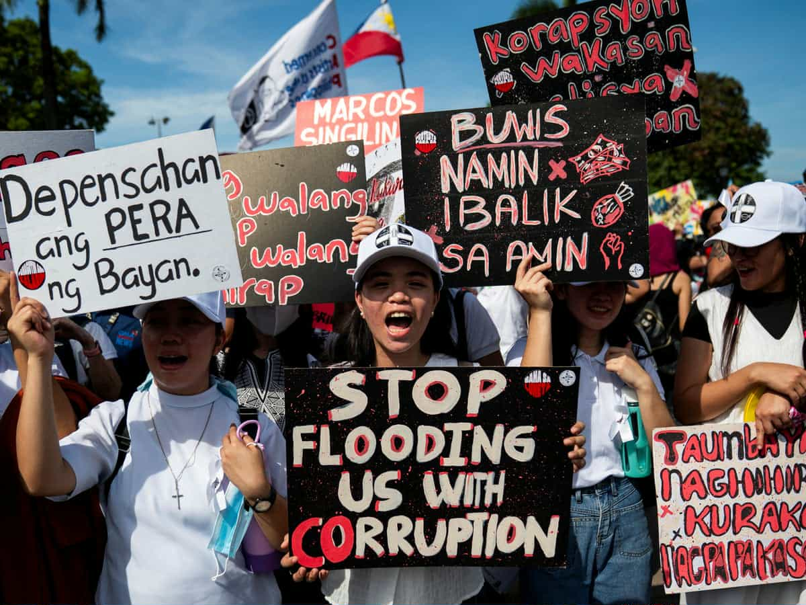

What Comes Next?
source: https://media.gettyimages.com/id/2236506729/photo/manila-philippines-filipinos-take-part-in-a-protest-against-corruption-at-rizal-park-on.jpg?s=612x612&w=gi&k=20&c=oxQYOr-ixRRWQQwUbyhxmUZp8YvHmC_0tWw_SI31aXY=
MANILA, Philippines - Overcoming the recent internal issues in the nation, a United Nations committee has presented fresh alarms on what is demonstrated as widespread and persistent; corruption within the Philippine government, despite the ongoing reformative actions.
Based on the recent observations released, the UN Committee on Economic, Social and Cultural Rights has seen that the country’s compliance with the International Covenant on Economic, Social, and Cultural Rights (ICESCR) during its prior review that took place during February 18, in Geneva.
According to the committee, the behavior of corruption remains to be persistent beneath all branches of government, even going as far as reaching a general public sector. It also raises concerns upon certain institutions as they lack sufficient resources for financial and technical needs to comply with proper investigation, due procedures, and corruption complaints.
In order to raise this issue, the UN body called on the Philippines to assure swift and independent investigations - particularly towards senior officials and members of the judiciary. Suspected individuals, must face the allotted penalties which would demonstrate how serious they handle this problem. The committee also urged the government to validate its anti-corruption agencies by providing adequate personnel, resources, and finance.
The Philippines has done the necessary procedures and have been properly acknowledged, aiming to enhance economic, social, and cultural rights. However, it has been pointed out that lower courts barely apply the said covenant which is an emphasis on the main concerns.
Going back to early suggestions, the committee has encouraged the Philippines to strengthen its protection for the said rights within the constitutional level, while expanding the usage of writs of amparo to cover the covenant rights, increase training programs for those in the judicial system and for government officials.
To validate the justice system, it urged the government to safeguard the independence, impartiality, and security of all the involved judges and prosecutors, shielding them from different types of influence and mediums of threats, violence, and other acts of fraudulence.